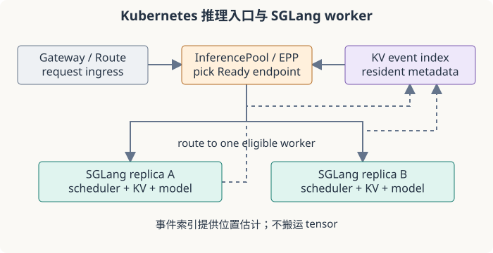
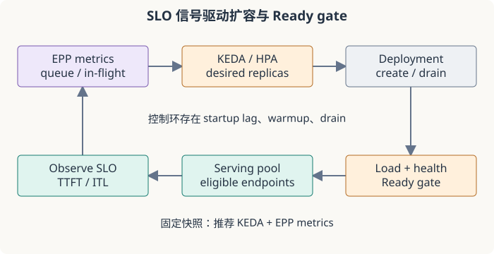

第 50 章 · SGLang 服务生命周期
SGLang × Kubernetes / llm-d：集群级推理调度与弹性部署
多个 SGLang replicas 如何在 Gateway、Endpoint Picker、KV locality 与 autoscaler 之间协作？
多个 SGLang replicas 如何在 Gateway、Endpoint Picker、KV locality 与 autoscaler 之间协作？ 从具体反例出发，连接算法、工程接口和验收边界。
1. 单引擎与集群控制面
SGLang engine 的 scheduler 决定本 replica 内的 batching、KV allocation 与 token 执行。llm-d 位于上层，负责跨 model-server replicas 的 traffic placement、服务发现、流控与 capacity control。Kubernetes 提供 Pod、Deployment、resource scheduling 和 health；Gateway API Inference Extension 使用 Gateway、HTTPRoute、InferencePool 等资源，EPP 参与选择 inference endpoint。不要把它与第16章 SGLang 自身 Router 当作同一个组件。
2. 请求路由的数据路径
Gateway 接收请求，结合 InferencePool 的 endpoint 信息与 EPP 选择 Ready worker；worker 的本地 scheduler 执行。Optimized baseline 使用 prefix-cache affinity filter（有 saturation override）缩小候选，再用 token-load scorer 选 endpoint。实际插件行为不是任意加权求和；本章 toy 只演示 locality 和 queue 的权衡。

3. 从近似 prefix 到 precise KV 事件
近似策略由历史流量推断 warm replica；precise guide 各 pod 通过 ZMQ 发布 KV-cache events，每 router replica 订阅并建立 resident block index，必须使用与服务模型一致的 tokenization。固定 llm-d guide 的 SGLang 方案采用独立 vLLM render pool，因为没有所需 render endpoint；索引是元数据，不是 KV tensor 传输，事件延迟/遗漏可能造成过时估计。
4. 缓存命中与排队的教学成本
令 prompt 长 N、endpoint i 可复用 H_i、prefill rate r_i、预估 queue delay Q_i，则简化 TTFT_i≈Q_i+(N−H_i)/r_i+constant。N=1000、r=100 token/ms，A warm H=800、queue=10ms，成本12ms；B cold H=0、queue=0，成本10ms。A queue 降为1ms，则3ms 胜出。真实 EPP 并非此公式，prefill rate 随 batch/context 变化，需 profile。
5. SLO-aware autoscaling 不是看 GPU utilization
固定 llm-d guide 推荐 KEDA + EPP metrics：in-flight、queue 或 saturation signals；WVA 路径已 deprecated，v0.9.0 为最后版本。控制环观测负载→计算目标 replica→HPA/KEDA 调整 Deployment→等待模型 Ready→接纳流量。冷启动、GPU placement、cache warmup、滞后、scale-down drain、版本更新与突发请求都影响稳定性。

6. 生产部署与兼容性门禁
以 optimized-baseline guide 为最小可部署参考，再按实际瓶颈引入 precise prefix、PD、tiered cache 与 flow control。固定 precise guide 的 NVIDIA/Intel SGLang 组合标为 community，不等同 CI validated；autoscaling 指南列出的 E2E badges 是 vLLM 组合，不能由此声称 SGLang 全矩阵已测试。检查 Kubernetes/Gateway provider、GPU device plugins、镜像 digest、model revision、tokenizer、network policies、KV transport 和版本。Wide EP 文档的 SGLang 支持也需逐路径核对。
7. 部署验收与观测
不在本文提供未经验证的生产 Helm 命令。按 pinned guide 部署 sandbox 后检查 Gateway/route/pool status、Endpoint Picker 的 ready candidates、pod metrics、KV events 和 render token IDs；测试 cold start、rollout、pod loss、event lag、queue overload、drain，跟踪 p95 TTFT/ITL、SLO goodput、tokens/s、queue、cache hit 和成本。不能将 vLLM benchmark 提升直接归因于 SGLang；本批未真实部署 K8s/GPU。
8. 交互：选择机制状态与反例
Kubernetes & llm-d 教学实验
Warm 但拥塞：A 复用800 tokens，queue10ms，估计12ms；B cold 10ms，选 B。
Warm 且空闲：A queue1ms，估计3ms；B 10ms，选 A。
Not Ready：A 即使预测最快，也必须排除；没有 Ready endpoint 时拒绝/等待由上层策略决定。
教学模型仅验证机制与反例，不代表真实 GPU 或集群 benchmark。
9. CPU 最小实验
下载 fleet_routing.py，使用标准库运行。源文件包含确定性输出及正反例断言。
python3 examples/fleet_routing.py实验是教学抽象，不执行实际模型、网络传输、GPU kernels 或 Kubernetes 部署。
10. 源码阅读路线与证据
固定上游快照 b323e8e6e3aacfe606b11a2ef51ae73bc8b283a7；llm-d 9059ad4050a3e1713d14b954685dac87cfe932cc，区分当前实现、工程建议和教学推导。
- What llm-d adds / Kubernetes-native gateway：llm-d adds fleet-level routing, KV management, PD and autoscaling using Gateway API Inference Extension resources.
- Overview / Supported Accelerators and Model Servers：Baseline uses prefix affinity filtering with saturation override and token-load scoring; guide has specific validated combinations.
- Overview / Supported Accelerators and Model Servers：Precise routing consumes KV events over ZMQ; the SGLang reference uses dedicated vLLM render pool and lists community support for selected configurations.
- Warning / KEDA + EPP Metrics：WVA is deprecated in the pinned guide; KEDA plus EPP metrics is recommended.
- What does llm-d offer to production inference?：llm-d provides orchestration above model servers including inference routing and operational controls.
前置章节：第 5 章 · 第 13 章 · 第 16 章 · 第 17 章 · 第 25 章 · 第 38 章 · 第 44 章 · 第 45 章。证据清单。